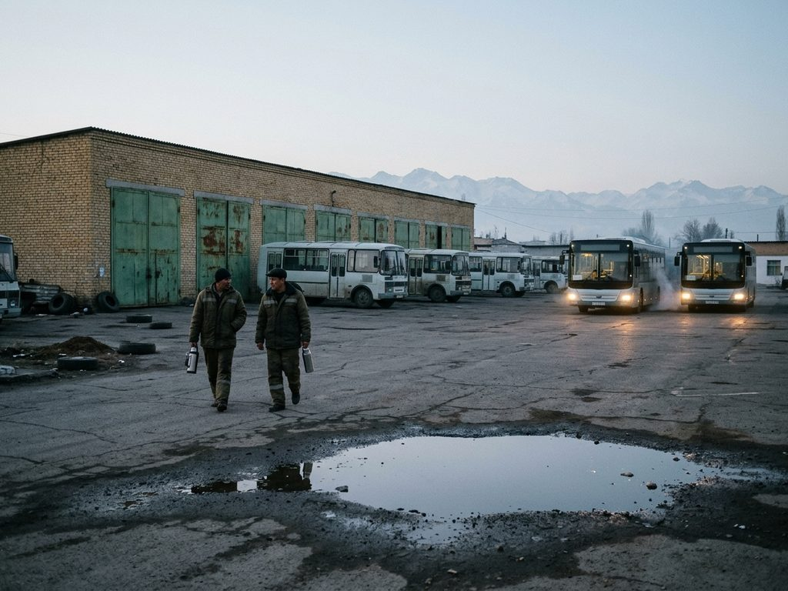

About the enterprise

The municipal enterprise «Talas Shaar Avtobus Parky» (Talas City Bus Park) belongs to the Talas City Hall. It runs the municipal bus routes, the city dispatch service for buses and marshrutkas, the bus stations' timetable boards in the city and the lost property office.
History
- 1958 Talas motor transport depot No. 1 founded with 40 buses, at the time of the university and the new districts in the south.
- 1970s-80s Ikarus and LiAZ buses; the city also had a trolleybus.
- 1992 Most buses stood idle during the war for lack of fuel; the depot was used as a garage for army lorries.
- 1994 Re-formed as the municipal enterprise «Talas Shaar Avtobus Parky». The first licensed marshrutkas appear.
- 2004 The trolleybus closed. Buses took over trolleybus routes 1, 2, 4 and 5 under the same numbers; the overhead wires were taken down in 2005.
- 2009 Dispatch service for all routes; this website opens.
- 2019 Marshrutka drivers' strike over fuel prices: most marshrutkas stopped for three days; Bus Park buses ran a double service on routes 1, 4 and 14.
- 2020 Under the quarantine regime the marshrutkas were halted for eight weeks (9 April to 4 June); the Bus Park carried medical staff and essential workers on special routes.
- 2021-2025 38 Yutong buses bought on the city budget.
- 2024 New route 16 to Alatau Heights.
Today
| Buses | 71: 38 Yutong ZK6108 (2021-2025), 21 LiAZ-5256 (1994-2003), 9 PAZ-3205, 3 Ikarus 280 (articulated; one runs on route 1 at peak times) |
|---|---|
| Staff | 412, of them 168 drivers and 46 conductors |
| Routes | 9 municipal bus routes; dispatch for 120 marshrutka routes |
| Passengers | about 38 million a year on municipal buses (2025) |
| Depot | Drivers' Street 7 (on the map), south-east of the centre between the TSU campus and the American School; workshop, fuel station, washing line, canteen |
Management and contacts
| Director | Almazbek Duishenov, reception Mon 14:00-17:00 by appointment, tel. 41-15-00 |
|---|---|
| Chief engineer | Viktor Lee |
| Head of operations (dispatch) | Aigul Temirbekova, tel. 41-15-15 (24 h) |
| Lost property office | room 4, tel. 41-15-22 |
| Personnel department | room 9, tel. 41-15-09 |
| Travel cards | cash desk, Mon-Fri 8:00-17:00 |
| Address | Drivers' Street 7 (Shoferler köchösü), Talas 724019. Buses 16 and 10 (stop «Bus Park») |
| info@transport.talas.iradgov.org |
Complaints about marshrutkas (route, fare, a driver's behaviour) go to the Transport and Roads Department of the City Hall, room 118, tel. 1-09-118, or the city services line 1-09. Please give the route number, the time and the vehicle's number plate.